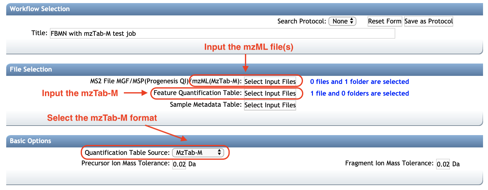

Introduction¶
The main documentation for Feature-Based Molecular Networking can be accessed here. See our article.
Below follows a description on how to use *mzTab-M format with the FBMN workflow on GNPS.
Using the mzTab-M format with FBMN¶
Introduction¶
The mzTab-M format is a standardized output designed for the report of metabolomics MS-data processing results.
Citation and development¶
Recommended Citations
This work builds on the efforts and tools from our many colleagues, please cite their work:
Nothias, L.-F., Petras, D., Schmid, R. et al. Feature-based molecular networking in the GNPS analysis environment. Nat. Methods 17, 905–908 (2020).
Wang, M. et al. Sharing and community curation of mass spectrometry data with Global Natural Products Social Molecular Networking. Nat. Biotechnol. 34, 828–837 (2016).
Hoffman et al. mzTab-M: A Data Standard for Sharing Quantitative Results in Mass Spectrometry Metabolomics Anal. Chem. 2019 9153302-3310
See the GitHub repository for jmzTab-M: https://github.com/lifs-tools/jmzTab-m
FBMN with mzTab-M¶
The FBMN workflow now supports the mzTab-M format (2.0, release 1.0.5). The mzTab-M file has to be inputed along with the related mzML files.
Basically, the mzTab-M is used to retrieve for each LC-MS/MS feature:
- The abundance of the LC-MS/MS feature in each sample.
- The filename (mzML) and the index of the most intense associated MS/MS spectrum.
After inputing the mzTab-M and mzML file(s), GNPS will automatically extract the MS/MS spectra from the mzML file and generate internally an MS/MS spectral summary that will be used for FBMN analysis.
So far only mzTab-M from XCMS have tested, please let us know if you have difficulties running FBMN jobs from mzTab-M files exported with OpenMS, MS-DIAL, MZmine, and others.
See an example job with mzTab-M and mzML files here.
Running FBMN with an mzTab-M¶
The mzTab-M file and the associated mzML file(s) can be uploaded to the GNPS web-platform and a FBMN job can be launched only from the standard interface of the FBMN workflow (you need to be logged in GNPS first).
- Select the mzML file(s). See the screenshot below.
- Select the mzTab-M file as Feature Quantification Table.
- (EXPERIMENTAL) Select the metadata table. Requirements are described here.

More information on the FBMN on GNPS can be obtained at this documentation page.
Join the GNPS Community !¶
- For feature request, or to report bugs, please open an "Issue" on the CCMS-UCSD/GNPS_Workflows GitHub repository.
- To contribute to the GNPS documentation, please use GitHub by forking the CCMS-UCSD/GNPSDocumentation repository, and make a "Pull Request" with the changes.
Page Contributors¶